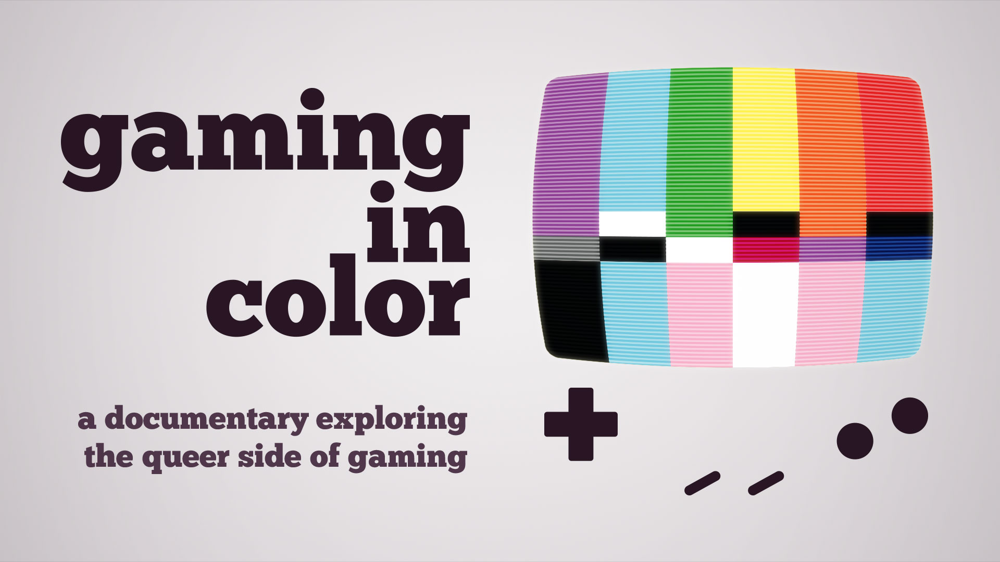

Read Only Memories: NEURODIVER
| Media: Game
| Release Date: Coming 2020
Take on the role of a gifted esper, ES88, and hunt down the Golden Butterfly, a powerful rogue telepath who's hidden themselves away in the memories of the citizens of Neo-San Francisco.
With the help of the genetically engineered psionic creature known as the Neurodiver, ES88 will dive into the memories and take on the roles of some familiar faces to the series, including Jess Meas, the gene-spliced, hybrid lawyer, TOMCAT, the notorious hacker, and Lexi Rivers, former police officer turned private eye.
Identify, manipulate and unlock information in these memories to help resolve the case of the Golden Butterfly!
Read Only Memories
| Media: Comic
| Release Date: December 2019
Set in the years between 2064 and upcoming NEURODIVER, IDW’s series features Lexi Rivers, NSFPD detective turn private eye. When a robot arrives at her door seeking a lost lover, she is drawn into a journey to the seemingly peaceful beaches of Santa Cruz.

Summer of Pride
| Media: Streaming Event
| Release Date: Summer 2019
The Summer of Pride is a series of LGBTQIA+ (queer) streamers playing queer games, all throughout the month of June. These fun gaymers will be playing some of the best and most unique games that showcase positive representation of queer characters and stories. Tune in and discover some really great games, and follow some really fun streamer personalities.

2064: Read Only Memories
| Media: Game
| Release Date: October 2015
Neo-San Francisco, 2064 AD. Your life as a struggling journalist is interrupted by the world’s first sapient machine, a ROM (Relationship and Organizational Manager) named Turing. Together, you and the quirky robot will encounter a colorful cast of locals and overcome challenges as you uncover the city’s secrets behind the overlapping futures of technology and humanity.
Can you survive in Neo-SF? Or will the mystery go unsolved?
Gaming In Color
| Media: Documentary Film
| Release Date: 2014
Out of the closet and into the arcade! Gaming In Color is a feature documentary exploring the queer side of gaming: the queer gaming community, gaymer culture and events, and the rise of LGBTQ themes in video games. Out now on Steam, iTunes, Google Play, Amazon, PlayStation, Xbox, and Vudu.
Get it at gamingincolor.tv!